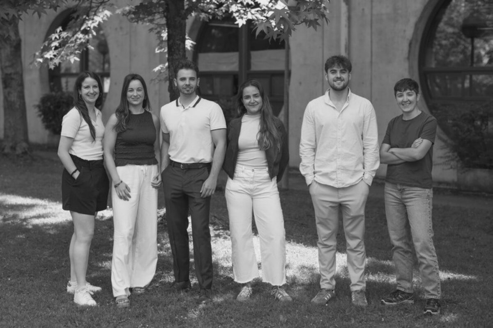
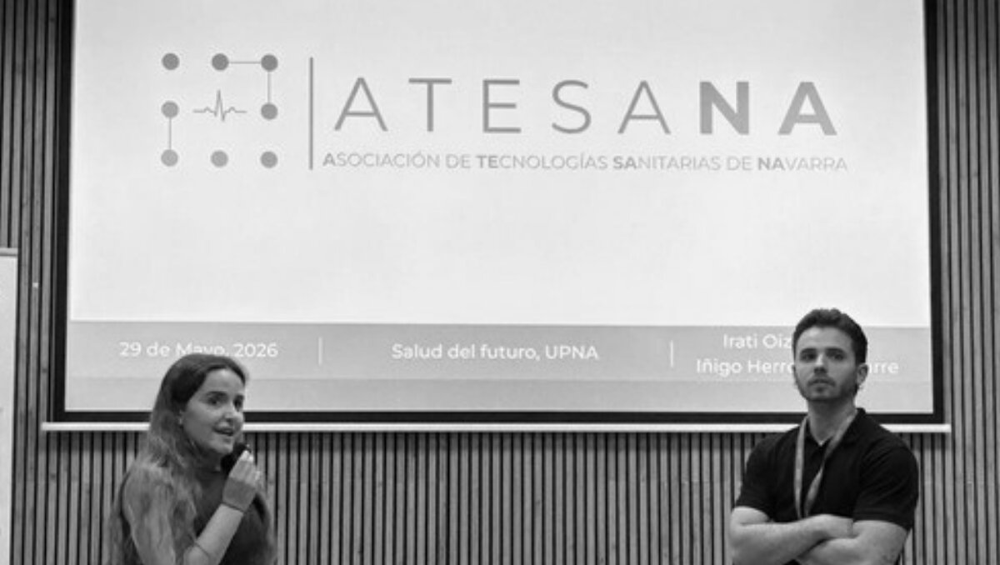
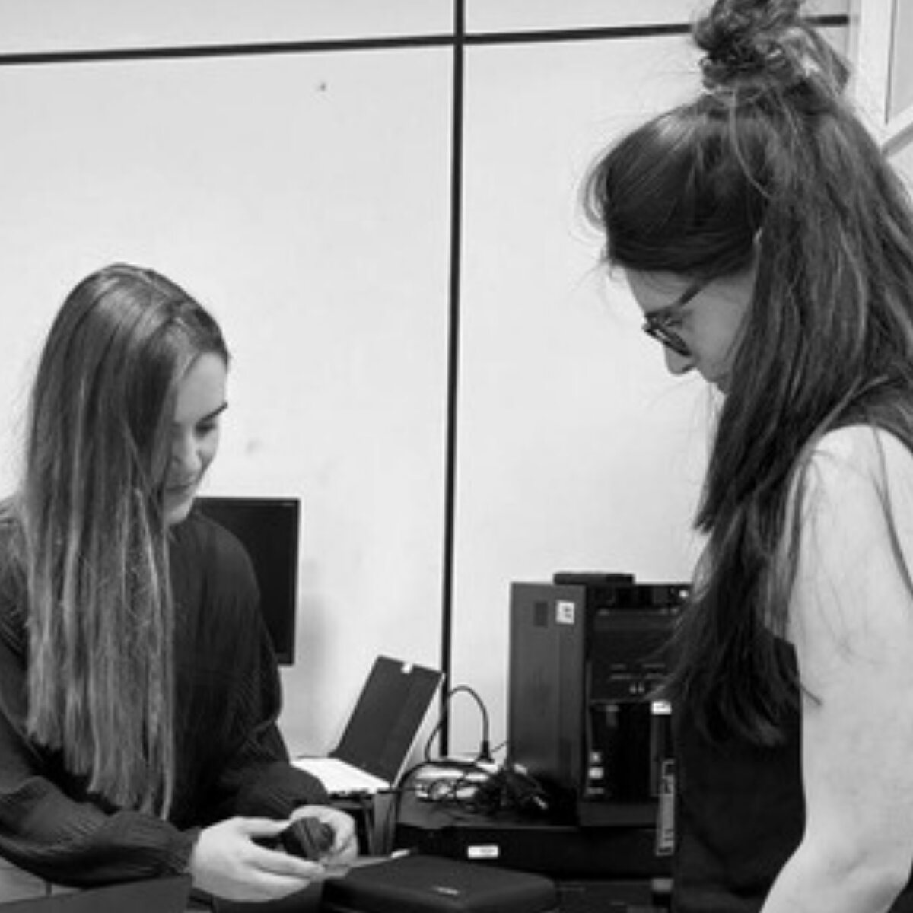

Visión
Antes de que exista un dispositivo médico, una aplicación clínica o una nueva herramienta de diagnóstico, suele haber una pregunta. A veces nace en un quirófano:
¿Por qué seguimos haciendo esto de esta manera?
Otras veces aparece en un laboratorio:
¿Y si pudiéramos utilizar esta tecnología para resolver ese problema?
También puede surgir en una empresa, en una universidad, en un hospital o incluso en una conversación entre profesionales de disciplinas aparentemente alejadas.
La tecnología sanitaria avanza cuando esas preguntas encuentran conexiones. Y esa es, en buena medida, la razón de ser de ATESANA.
Navarra cuenta con profesionales sanitarios, investigadores, ingenieros, empresas, emprendedores y estudiantes con capacidades muy diversas. El reto no es únicamente disponer de ese talento, sino conseguir que se encuentre, comparta conocimiento y genere nuevas oportunidades de colaboración. ATESANA nace con esa vocación: contribuir a conectar las piezas del ecosistema de tecnologías sanitarias de Navarra. No como un espacio cerrado, sino como un punto de encuentro entre quienes conocen una necesidad clínica, quienes investigan una posible solución y quienes tienen la capacidad de convertirla en una tecnología que pueda llegar algún día al paciente.

Estado y tracción
Toda iniciativa tiene un momento en el que deja de ser una idea para empezar a convertirse en algo tangible. En ATESANA, ese proceso ya está en marcha.
Durante estos primeros meses hemos comenzado a conectar con distintos agentes del ecosistema navarro para conocer qué se está haciendo, qué capacidades existen y dónde pueden surgir nuevas oportunidades de colaboración. El objetivo es empezar a dibujar el mapa de la tecnología sanitaria en Navarra.
Un mapa que no se limite a identificar organizaciones, sino que nos permita conocer los proyectos, las tecnologías, las líneas de investigación, las necesidades clínicas y, especialmente, las conexiones que pueden surgir entre todos ellos. Porque un ecosistema no se define únicamente por quién está dentro, sino por cómo se relacionan sus integrantes.
Esta primera newsletter sirve para presentarnos. Las siguientes estarán más centradas en conocer lo que está ocurriendo en Navarra, con un carácter más temático y periodístico: proyectos reales de tecnología sanitaria y las personas que están detrás de ellos.
Cada número podrá abordar un ámbito diferente (biomateriales, inteligencia artificial, dispositivos médicos, cirugía, diagnóstico, medicina personalizada, ingeniería de tejidos, salud digital, fabricación avanzada…), pero partiendo siempre de una misma pregunta:
¿Qué se está haciendo realmente en Navarra y qué podemos aprender de ello?
ATESANA comienza a construir las conexiones que permitirán conocer, vertebrar e impulsar el ecosistema de tecnología sanitaria en Navarra.

Participación
- ¿Conoces un proyecto de tecnología sanitaria que debería aparecer en estas páginas?
- ¿Hay una tecnología que crees que merece ser debatida?
- ¿Existe una necesidad clínica que todavía no ha encontrado una solución satisfactoria?
- ¿Quieres involucrarte en ATESANA?
A raíz de algunas de las sugerencias que recibimos durante nuestra presentación, ya está disponible un nuevo canal de comunicación a través de nuestra web, en el apartado de Contacto. Queremos que este espacio sea una vía abierta para todo aquello que queráis trasladarnos: resolver dudas, aportar ideas, hacer propuestas, compartir iniciativas o plantear cualquier cuestión relacionada con ATESANA y el ecosistema de tecnología sanitaria en Navarra.
Como asociación sin ánimo de lucro, queremos construir ATESANA de forma abierta y colaborativa. Si quieres participar, colaborar o proponer nuevas actividades, escríbenos. En los próximos meses iremos poniendo en marcha nuevos encuentros y espacios, y vuestras ideas ayudarán a darles forma.
ATESANA está abierta a quienes quieran aportar, participar y ayudar a construir este proyecto.
La tecnología sanitaria necesita conocimiento científico, pero también necesita comprender problemas clínicos. Necesita ingeniería, pero también fabricación. Necesita investigación, pero también regulación, financiación y capacidad empresarial. Ninguna de estas piezas funciona completamente aislada. Por eso, el verdadero valor de un ecosistema no está únicamente en sumar capacidades, sino en conseguir que esas capacidades se encuentren.
Esta primera newsletter es un pequeño paso en esa dirección. A partir de aquí queremos escuchar, conocer proyectos, abrir conversaciones y contar lo que se está haciendo en Navarra. Porque quizá la próxima gran innovación sanitaria no dependa de encontrar una pieza que todavía no existe. Quizá dependa de conseguir que dos piezas que ya existen se encuentren por primera vez.
Gracias por formar parte de los cimientos de ATESANA
Seguimos construyendo juntos
El equipo de ATESANA